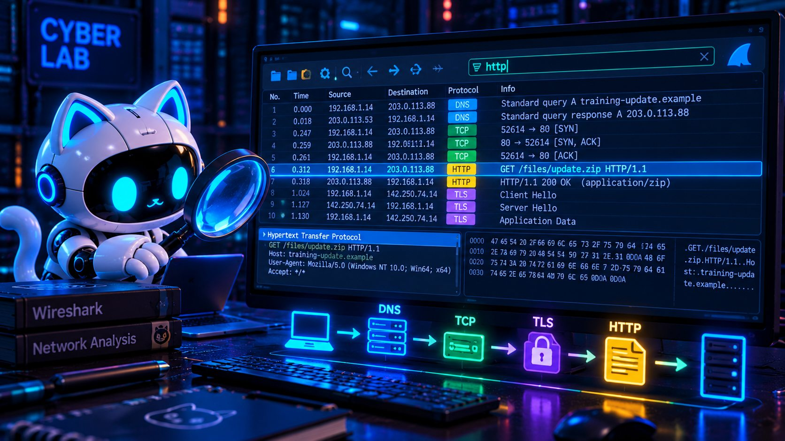

🦈 Побачити невидиме
О 14:37 комп’ютер CyberLab встановив незвичне з’єднання. У нас є incident_010.pcapng із 847 навчальними пакетами. Відновіть події, не роблячи поспішних висновків.
🦈 Відкрити розслідування
847 пакетів. З чого почати?
Аналітик ставить запитання, а потім фільтрує дані. Шукайте DNS-запит до training-update.example, HTTP-обмін із сервером та навчальний слід у TCP-потоці.
Правило: працюємо з готовим навчальним дампом, не перехоплюємо чужий трафік.
📦 Завантажити навчальний .pcapngДамп синтетичний: створений спеціально для вправи, не містить реального трафіку.
🧩 Як читати пакет
Номер і час появи пакета.
Звідки й куди передаються дані.
Тип обміну та короткий опис.
Спробуйте фільтри dns, http, tcp, ip.addr == 203.0.113.88, tcp.stream eq 3.
🎬 Відео
🧪 Три практики
01 · Wireshark у браузері
Симулятор: 847 пакетів, фільтри, вибір пакета, деталі, Follow TCP Stream.
Запустити02 · Збери хронологію
Drag-and-drop: від DNS до HTTP POST. Працює також дотиком або кнопками.
Скласти події🤖 Веббот місії 10
Послідовне розслідування з перевіркою відповідей. Саме тут відкривається FLAG і PDF-звіт.
Увійти у веббот📋 Перевірка знань
Посилання на Google Форму для місії 10 ще не надано.
🔜 Місія 11
«Порти: двері комп’ютера». Що означають числа :53142 та :8080 після IP-адреси?